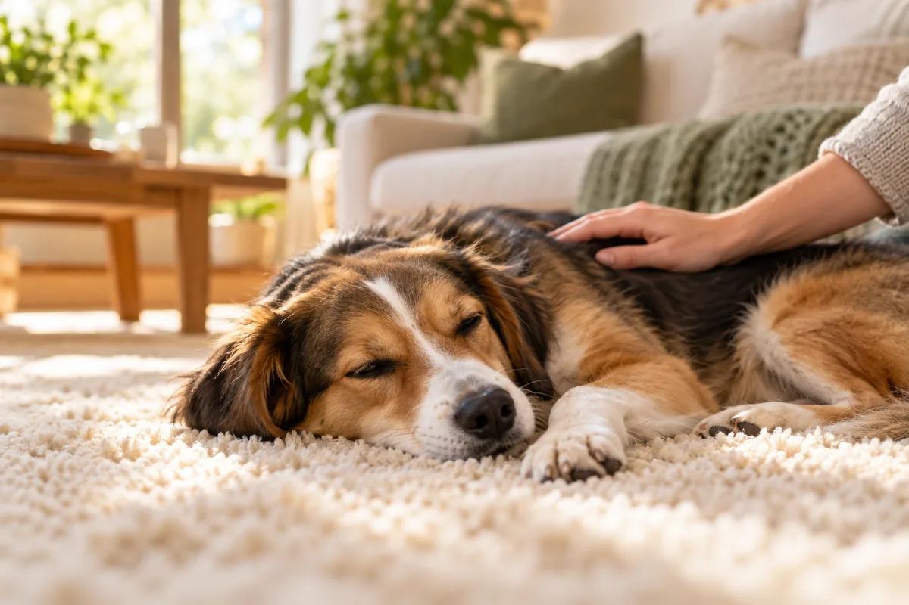
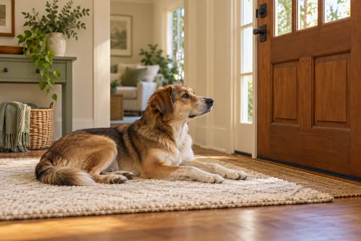
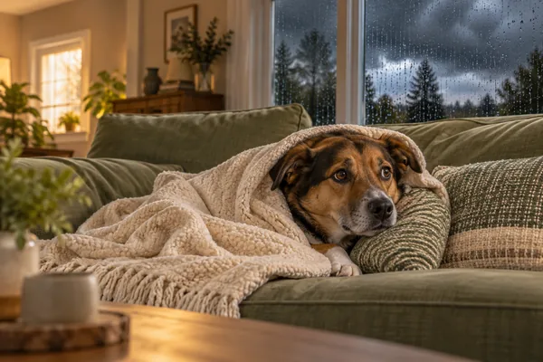
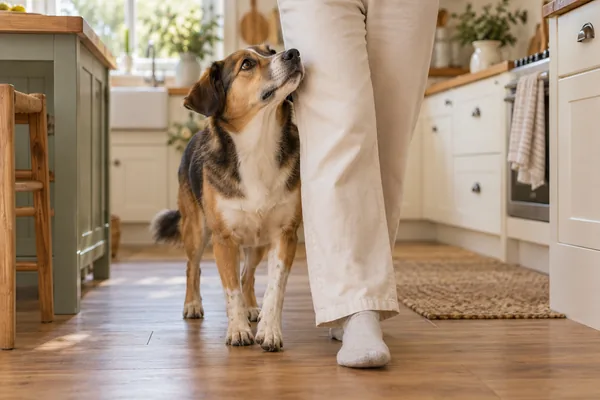
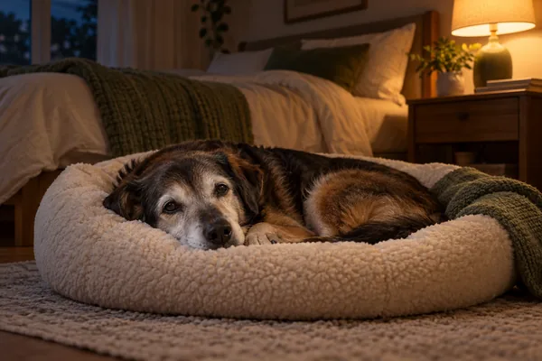
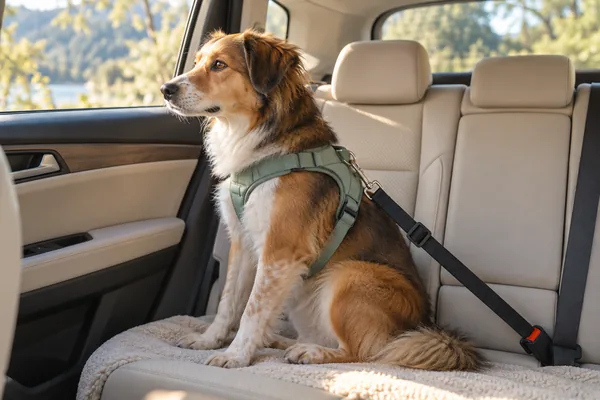
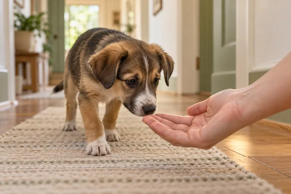

Help for your anxious dog, one problem at a time
Pick what your dog is struggling with and get a step-by-step plan, the products that help, and what to try first.
Written from published vet and behaviour sources. Amazon links are affiliate links (disclosure).

Most-asked questions
What's your dog struggling with?
Choose the problem that sounds most like your dog. Each guide explains why it happens and what to do, step by step.

Home alone and separation anxiety
Barking, chewing or panic when you leave. Start with a step-by-step alone-time plan.
Separation anxiety guide →
Loud noises: storms, fireworks, vacuums
Shaking, hiding or bolting at loud sounds. Learn what calms them and how to desensitise.
Noise phobia guide →
Clingy or velcro dog
Follows you room to room and can't settle without you. Build independence gently.
Why is my Aussie so clingy? →
Nighttime crying and restlessness
Pacing, whining or waking you up at night, common in puppies and senior dogs.
Nighttime anxiety guide →
Car, vet and groomer fear
Panting, drooling or refusing to get in the car or through the clinic door.
Car travel anxiety guide →
New puppy or rescue dog
Help a nervous new dog settle in, learn the house and trust you.
Rescue dog anxiety guide →Calming products worth trying
Tools that help alongside training. Not sure where to begin? See the full buyer's guide →
Thundershirt Classic Anxiety Vest
A snug pressure wrap many owners use for storms, fireworks and car rides.
View on Amazon →Smart Pet Love Snuggle Puppy
Soft toy with a heartbeat pulse and warmth pack that helps new puppies settle at night.
View on Amazon →VetriScience Composure Calming Chews
Chews with colostrum, L-theanine and thiamine, given ahead of stressful events.
View on Amazon →KONG Classic (Medium)
Stuff and freeze it to keep your dog busy and calm when you leave the house.
View on Amazon →LectroFan White Noise Machine
Steady fan or white noise that masks traffic, thunder and fireworks.
View on Amazon →Best Friends by Sheri Calming Bed
Raised-rim donut bed for dogs that like to curl up and burrow.
View on Amazon →As an Amazon Associate we earn from qualifying purchases, at no extra cost to you. Affiliate disclosure.
Find your dog's breed
Every breed has its own anxiety triggers. Pick yours for breed-specific advice.


Our most-read guides
Best Dog Calming Products and Calming Aids
What actually helps an anxious dog: wraps, chews, diffusers, toys and beds compared.
Dog Separation Anxiety: A Step-by-Step Plan
Signs, causes and a gradual alone-time training plan you can start today.
Do Thundershirts Work? An Honest Review
How the pressure wrap works, who it helps, sizing tips and when to try something else.
How Long Do Calming Chews Take to Work?
Timing, ingredients and how to use calming chews before storms, travel and vet visits.
How to Stop Anxious Barking
Why anxious dogs bark and the calm, reward-based steps that reduce it.
Leash Reactivity: Calm Walks Again
Why dogs lunge and bark on the lead, and a training plan for calmer walks.
More guides and breed articles
More guides
- Enrichment for Anxious Dogs: 5 Puzzle Toys & Activities
- Thundershirt vs Calming Chews: Which Works Best?
- Thundershirt Alternatives: 5 Anxiety Vests Ranked
- Thundershirt Not Working? 7 Fixes + Best Alternatives
- Thundershirt Sizing for Large Dogs: Golden, GSD, Lab & More
- Dog Body Language: What Your Dog Is Really Telling You
Popular breed articles
- Beagle Scared of Thunder or Fireworks? How to Calm Them
- Border Collie Separation Anxiety: Strategies That Help
- Cavalier Scared of Thunder or Fireworks? How to Calm Them
- Chihuahua Separation Anxiety: Strategies for a Calm Pup
- Why Do Corgis Whine So Much? 4-Step Plan to Reduce It
- Dachshund Departure Anxiety: Desensitization Protocol
- Doberman Scared of Thunder or Fireworks? How to Calm Them
- French Bulldog Separation Anxiety: 5-Step Protocol
- German Shepherd Leash Reactivity: Fear-Based Training Plan
- Golden Retriever Separation Anxiety: Step-by-Step Plan
- How to Stop Your Husky Howling in an Apartment
- Why Does My Labrador Follow Me Everywhere?
- Pitbull Separation Anxiety: Strategies That Help
- Poodle Separation Anxiety: Toy vs Standard 5-Step Plan
- Why Is My Pug So Clingy?
- Why Are Weimaraners So Clingy? How to Help
- Yorkshire Terrier Separation Anxiety: Strategies That Help
- Australian Shepherd Separation Anxiety: Step-by-Step Plan
More for your dog on each breed page.